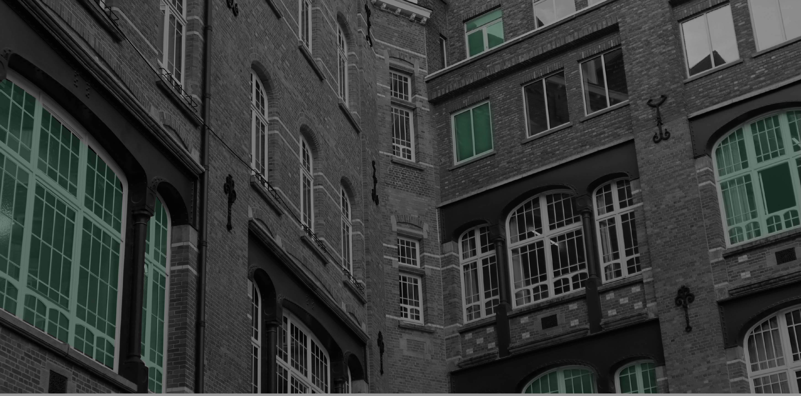

In 2004 is het precies 400 jaar geleden dat de paters-jezuïeten een college stichtten in Brussel. In de
loop der jaren heeft dat college heel wat beleefd. Het is in 1773 zelfs op sterven na dood geweest, om
in 1835 herboren te worden.
We kunnen de geschiedenis van ons college dan ook in twee periodes onderverdelen: het oude college
(1604-1773) en het nieuwe college (1835-nu). In wat volgt, trekken we in vogelvlucht doorheen vier
eeuwen boeiende onderwijsgeschiedenis.

1540: erkenning van de Orde
Paus Paulus III erkent officieel de religieuze orde die Ignatius van Loyola kort daarvoor had opgericht:
de Societas Jesu (= S.J.).
1542-1585: vestigingen van de jezuïeten in de Nederlanden
Twee jaar na de officiële start van de Orde vestigen de jezuïeten zich ook in de Nederlanden: Leuven
(1542), Doornik (1554), Kamerijk en Antwerpen (1562), Douai (1566), Sint-Omer (1567), Luik (1569),
Brugge (1570), Maastricht (1574), Rijsel (1578), Valenciennes (1581), Bergen en Kortrijk (1583), Gent en
Ieper (1585).
1586-1604: vestiging van de Orde in Brussel
Enkele paters vestigen zich in 1586 in Brussel in het huis van Carolus Scribani, een jezuïet in
opleiding. In 1589 kunnen de paters het ‘Hof van Grimberghe’ aankopen, gelegen tussen de Ruysbroeck-, de
Stro- en de Goudstraat. Ze bouwen het uit tot hun residentie en bereiden er de oprichting van een
college voor.
1599: de Ratio studiorum
In 1599 geeft de Orde de Ratio studiorum uit, waarin de krijtlijnen van het Ignatiaans opvoedingsproject
staan uitgetekend. Vanaf nu hebben alle jezuïetencolleges waar ook ter wereld een duidelijke leidraad.
In 1625 wordt het document aangepast voor onze contreien: Instructio pro scholis provinciae
Flandro-Belgicae (‘Instructie voor de scholen van de Diets-Nederlandse provincie’).
1604: opening van het Regium Gymnasium Bruxellense
Op 14 juli 1604 wordt het Brusselse jezuïetencollege, gewijd aan de aartsengel Michiel, plechtig
geopend. Bij de start zijn er 400 leerlingen, in 1608 al 500. In de beginfase van het college spelen
twee rectoren een cruciale rol: pater Thomas Sailly (1611-1614) en pater Carolus Scribani (1619-1625).
1606-1621-1660: bouw van een eigen kerk
Al snel hebben de paters nood aan een eigen kerk. In 1606 leggen de aartshertogen Albrecht en Isabella
de eerste steen van een kerk naar het ontwerp van broeder Hendrik Hoeymaker. In 1621 wordt de kerk in
aanwezigheid van de aartshertogen ingewijd. In 1660 is ook de klokkentoren voltooid.
1640: de Orde viert feest!
Het honderdjarige bestaan van de Orde wordt ook in Brussel uitbundig gevierd. Het feest wordt met grote
pancartes in heel de stad aangekondigd.
1695: bombardement door de Fransen
In 1695 bombardeert het leger van Lodewijk XIV Brussel. De stad (o.a. de Grote Markt) komt zwaar
gehavend uit de strijd, maar de collegegebouwen en de kerk zijn als bij wonder gespaard gebleven.
1773: opheffing van de Orde en einde van het Oud College
Na decennia van onrust en hetzes tegen de jezuïeten slagen de tegenstanders van de Orde erin ze door
paus Clemens XIV te laten opheffen. In de Nederlanden geeft keizerin Maria Theresia dadelijk gehoor aan
de pauselijke bule ‘Dominus ac Redemptor’: ze laat alle vestigingen (residenties, colleges en kerken)
van de jezuïeten sluiten. Op 20 september is het Brusselse college aan de beurt: kerk en college worden
verzegeld, de inboedel in beslag genomen en grotendeels in openbare veilingen verkocht.
1816-1891: de laatste zichtbare sporen van het Oude College verdwijnen
In 1816 worden de gebouwen van het oude college verbouwd tot justitiepaleis. Later deed het gebouw
dienst als rijksarchief, tot het in 1891, bij de heraanleg van de Lebeaustraat, helemaal gesloopt wordt.
Van het oude college is dan niets meer te zien, maar ondertussen is er al een nieuw college opgericht?
1814: heroprichting van de Orde
De Orde is, ondanks de officiële pauselijke opheffing, nooit helemaal van het toneel verdwenen. Overal
proberen geestelijken verder te leven volgens het Ignatiaanse ideaal. In Rusland blijven de jezuïeten
zelfs als orde verder werken met goedkeuring van en zelfs op vraag van tsarin Catharina. In 1814
herstelt paus Pius VII de Orde met de pauselijke bule ‘Sollicitudo omnium ecclesiarum’.
1833: de jezuïeten keren terug naar Brussel
In 1833 vestigen de paters Jan-Baptist Boone en Lodewijk Gilliodts zich in Brussel in een huis in de
Proosdijstraat. Ze verhuizen al snel, in afwachting van een grotere, definitieve vestigingsplaats. Ze
hebben de expliciete opdracht een nieuw college op te richten in Brussel.
1835: aankoop van het ‘Hotel van Hoorn’
Op 29 augustus verhuizen de paters naar het Hotel van Hoorn in de Ursulinenstraat. Een maand later opent
het nieuwe (Franstalige) College Saint Michel. Er zitten 60 leerlingen op de schoolbanken.
1843-1884: het internaat
In 1843 openen de paters ook een internaat voor 13 internen. Een jaar later zijn er 37 internen. Hun
aantal neemt steeds maar toe, zodat het internaat uiteindelijk een aparte entiteit wordt. In 1884 wordt
het echter gesloten.
1850-1852: bouw van een eigen kerk
Ook in het nieuwe college hebben de paters al snel nood aan een eigen kerk. In 1850 wordt de eerste
steen gelegd. Twee jaar later wijdt kardinaal Sterckx, aartsbisschop van Mechelen, de kerk in.
1902-1905: bouw van een nieuw college, het ‘(nouveau) College Saint Michel’
N.a.v. de geplande werken voor de Noord-Zuidverbinding dwars door Brussel zien de paters zich
genoodzaakt uit te zien naar een nieuwe vestigingsplaats. Het oude internaatsgebouw - ondertussen
omgevormd tot klassen - wordt onteigend en moet vóór eind 1908 ontruimd zijn. Op een nieuw terrein langs
de ‘Boulevard de la Grande Ceinture’ in Etterbeek wordt in ijltempo een nieuw college in neo-romaanse
stijl gebouwd. In 1905 gaan de deuren open voor ongeveer 500 leerlingen.
1909-1911: verbouwing van het ‘(ancien) Colleege Saint Michel’
Er gaan ondertussen steeds meer stemmen op om een jezuïetencollege in hartje Brussel te behouden. Op 12
mei 1908 deelt het generalaat van de Orde mee dat het college inderdaad behouden blijft. De oude
gebouwen tussen de Priem- en de Ursulinenstraat moeten echter volledig afgebroken worden. Er komt een
nieuw, passend gebouw voor in de plaats. Daarmee is het huidige buitenaanzicht van het college min of
meer vastgelegd.
1921: een nieuwe naam: het "College Saint Jean Berchmans"
Om elke naamsverwarring te vermijden wijst het generalaat de (oude) naam ‘College Saint Michel’ toe aan
het nieuwe college in Etterbeek. Het college in de Ursulinenstraat heet vanaf 1921 “College Saint Jean
Berchmans’.
1935: eerste jubileum van het nieuwe college
In 1935 is er groot feest in de Ursulinenstraat: het is honderd jaar geleden dat de jezuïeten er hun
nieuw college oprichtten. Er wordt ook een heus huldeboek uitgegeven.
1938-1953: vernederlandsing van het College Saint Jean Berchmans
In 1938 wordt onder impuls van pater Jozef Verschueren (van het beroemde woordenboek) een
Nederlandstalige sectie opgericht, die geleidelijk uitgroeit tot een volwaardige sectie (1944). Het
generalaat besluit de Franstalige sectie in de Ursulinenstraat geleidelijk af te bouwen en over te
brengen naar het College Saint Michel. In 1953 verlaat de Franstalige sectie definitief het college. Het
College Saint Jean Berchmans wordt dan het Sint-Jan Berchmanscollege.
1958-2001: het internaat
In 1958 worden de bouwwerken voor het internaat gestart: boven de vleugel in de Priemstraat wordt een
dubbele verdieping kamers gebouwd. In 1960 opent het internaat de deuren. Op het hoogtepunt telde het
zelfs 128 internen. In 2001 wordt het wegens een tekort aan internen gesloten.
1963: zilveren jubileum van het Nederlandstalige college
In 1963 bestaat het college 25 jaar als Nederlandstalige school. Dat wordt uitgebreid gevierd. In
hetzelfde jaar wordt ook de kerk verbouwd.
1971: invoering van het V.S.O.
In 1971 zet het Sint-Jan Berchmanscollege onder impuls van pater Marcel Cnops de stap naar het Vernieuwd
Secundair Onderwijs.
1988: gouden jubileum van het Nederlandstalige college
Er is opnieuw feest, met een grootse viering in de Basiliek van Koekelberg, een academische zitting op
school (1989) en een jubileumuitgave, verzorgd door Michel Jappens: ‘Sint-Jan Berchmanscollege: 50 jaar
Nederlandstalig jezuïetenonderwijs in het hart van Brussel 1938-1988’ (Brussel, 1988).
1993: de laatste paters verlaten het college
In 1993 laten de paters-jezuïeten het college vol vertrouwen over aan leken. Ze blijven het korps in de
traditie van de Ignatiaanse spiritualiteit begeleiden.
2004: groot feest !!!
N.a.v. van de 400ste verjaardag gaf Dessa, de oud-leerlingenbond van het college, een cd-rom uit met een
schat aan beeld- en tekstmateriaal.
Over die boeiende geschiedenis van het jezuïetencollege in Brussel schreef pater Brouwers reeds in 1979
een boeiend boekje: Lodewijk Brouwers s.j., "De jezuïeten te Brussel 1586-1773. 1833" (Mechelen, Uitg.
"Huis van Leliëndaal", 1979)